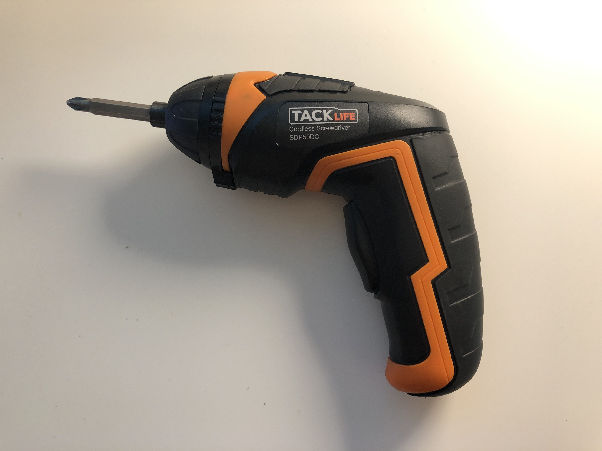
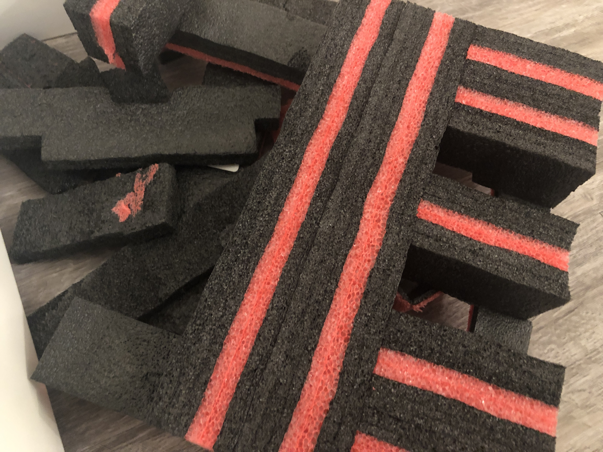

A1: Model Prototype⭐
October 18, 2021

The Goal
Design and create a low-fidelity prototype of a handheld electric screwdriver. The design of the screwdriver should consider the following:
- variable speed control
- screwdriver selection mechanism (10 total screwhead choices)
- screwdriver direction selection mechanism (screw in or screw out)
- digital readout of number of screws screwed and screws unscrewed
- can be used right or left handed
- product dimensions are a minimum of 6 inches long
- contains a rechargeable battery
- weight is in between 1-1.5 pounds
Design
To begin the designing process, I first thought of my past experiences with handheld electric screwdrivers to help guide minimum expectations for my own prototype. I’ve previously used a small cordless handheld electric screwdriver and a larger cordless drill in various assembly and installation processes. If I’m not drilling a hole through a wall, I prefer using the smaller electric screwdriver, because it’s lighter, more compact, and easier to hold in one hand. The design for my lo-fi prototype was heavily influenced by my previous experience with this electric screwdriver (shown below).
Going to my sketchbook, I began sketching a version of this screwdriver above. I knew that this screwdriver allows easy switching between screwdriver head types, because it’s magnetic. There are LED lights indicating battery life, a long trigger allowing two fingers to activate rotation at one speed, a physical switch to change rotation direction, and a port to recharge the battery.
I then sketched variations of this screwdriver that would meet all the desired components: variable speed control, screwdriver selection mechanism (meaning at all 10 screwhead choices had to be housed on the screwdriver), and a digital readout. I figured that the digital readout could be small and placed on the top for easy visual accessibility between left and right-handed users. Speed could then be controlled by pressure on the trigger, and the biggest challenge was how I would house and easily switch out 10 different bit choices. The following sketch is the idea I decided to prototype.
Remember these multicolored pens where you could select and retract the different colors by sliding a knob? The way I designed my prototype to switch out between different bits was inspired by this mechanism. Users would slide up and lock in their chosen bit type.
With this design, I began to work on my prototype.
Design
I constructed my prototype from foam, hot glue, cardboard, paper, foil, and tape. I carved the main shape out of foam. My biggest goals during prototyping were that it should be comfortable, easy to hold, and include as many components in my design above to allow for a more informative user test.

As shown in the images of my prototype above, I had a change of mind during the process about how I would store and select screwdriver bits. As I began to work on the retractable pen mechanism, I remembered how often those pens would break. Since the end of the screwdriver would have to withstand vibration and rotating parts, this particular mechanism may be prone to more breakage. I instead opted for a storage system where users could insert and switch out the bits by manually selecting them and inserting the bit themselves. This would be aided by magnets to snap the bits into position.
User Test
Access user test video here on Youtube.
I conducted one user test with my prototype where I encouraged the user to speak out loud about their experience. The goals of the user test were to examine the prototype’s usability, feasibility, and desirability. Prior to testing for these three, I first had the user hold the prototype and explain what they thought each component meant.
Usability
- I had the user complete 6 different tasks with the prototype to observe its usability and intuitiveness.
- These tasks included: changing speed, changing direction, describing which specific setting allows for
screw/unscrew function, understanding the info on the digital readout, switching the screwdriver bit shape, and charging the screwdriver.
- As the user progressed through these tasks, I would ask questions if I observed pain points or areas of confusion.
Feasibility
- Testing for feasibility was done through the fidelity of the prototype. For the most part, the user could experience an accurate handheld feel, see where all the components would exist, and try out the screwdriver bit switching experience.
Desirability
- Before the user test, I asked the user a series of questions to better understand their background and previous experience with
screwdrivers and electric screwdrivers.
- After the user test, I asked the user a series of questions about their experience using the prototype, whether it met their needs,
what could be improved, and what else may be left desired.
Analysis + Critique Feedback
What Worked Well:
- Prototype feels “very comfortable” in hand.
- All tasks were given an overall “easy” rating on a scale of “extremely easy” to “extremely difficult.”
- User was “extremely satisfied” with the overall experience.
- Battery LED Indicator is helpful.
- Handle is not too short or too long.
What Needed Improvement:
- Digital readout should be replaced on the side that faces the user when they hold out the prototype in front of them.
- Difficult to test for changing speed since the trigger controls speed and the prototype wasn’t fully functional.
- Stored screwdriver bits should push all the way into the screwdriver instead of sticking out. Users could push the
stored bit, and it could spring outwards. The body should then be transparent so that users can see which bits they are retracting.
- Different users have a different preference for how they’d want to switch the screwdriver’s direction. Some would prefer a
left/right switch versus the current up/down switch (up signifying screw in, and down signifying screw out).
Key Findings:
- All users thought the prototype felt comfortable in the hand.
- Most users wanted the digital readout to be replaced onto another side.
- Screwdriver storage component could be improved by allowing the entire bit to store in the body and by making the body transparent for visibility.